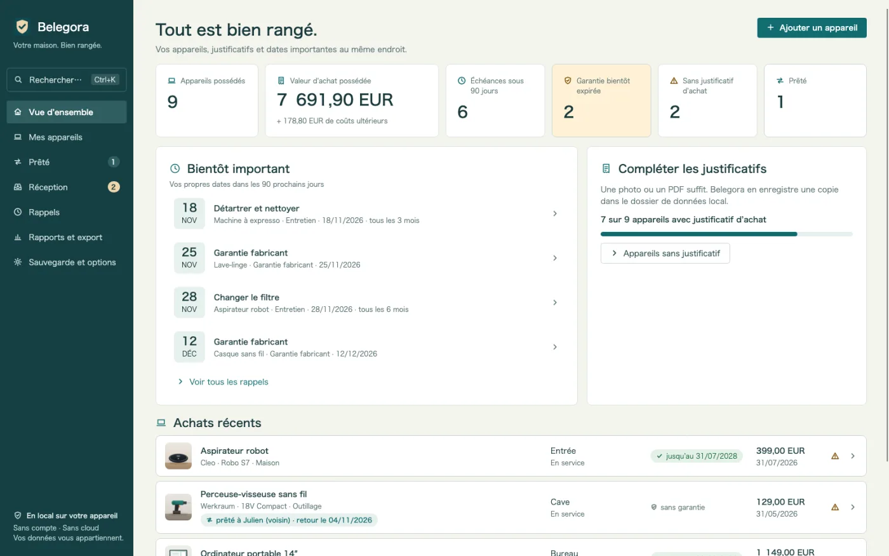
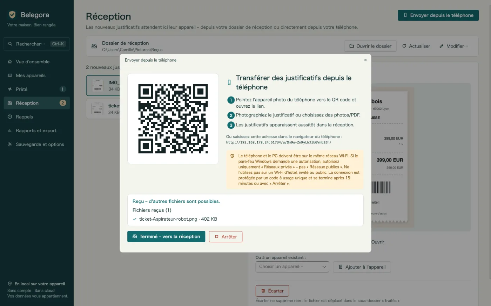
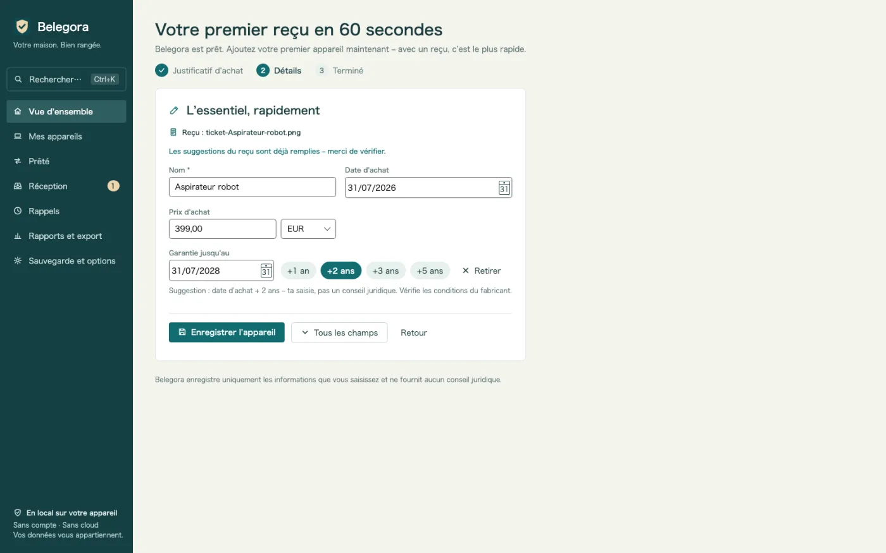
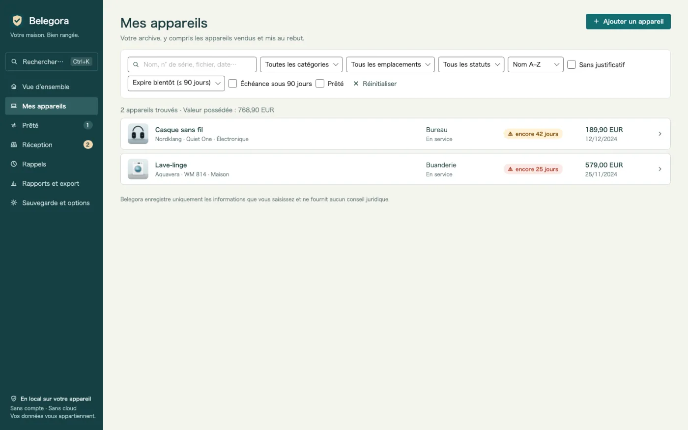
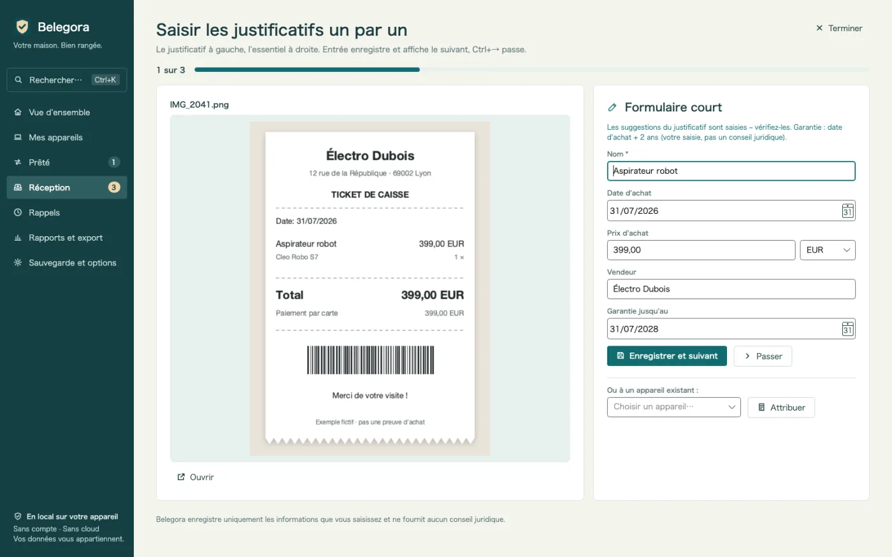
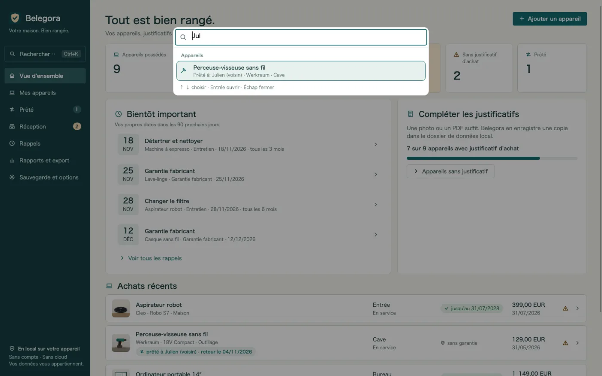
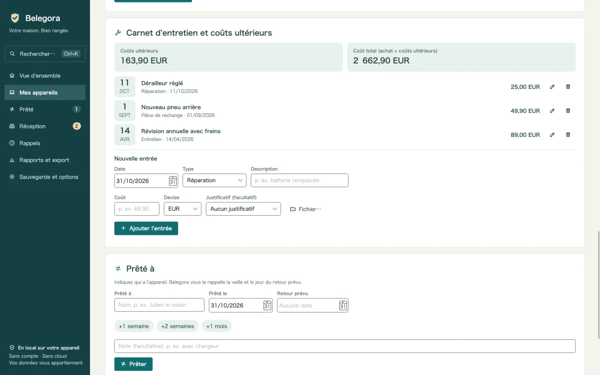
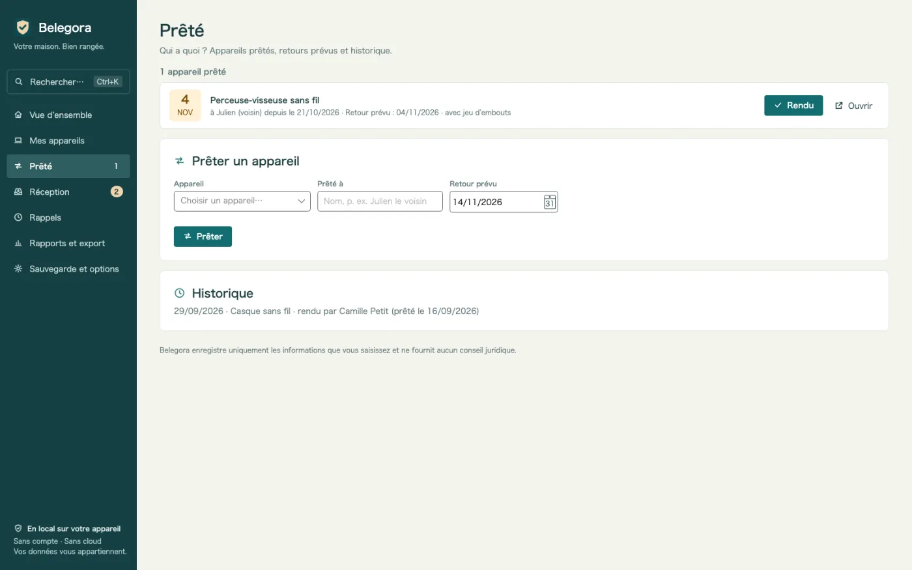
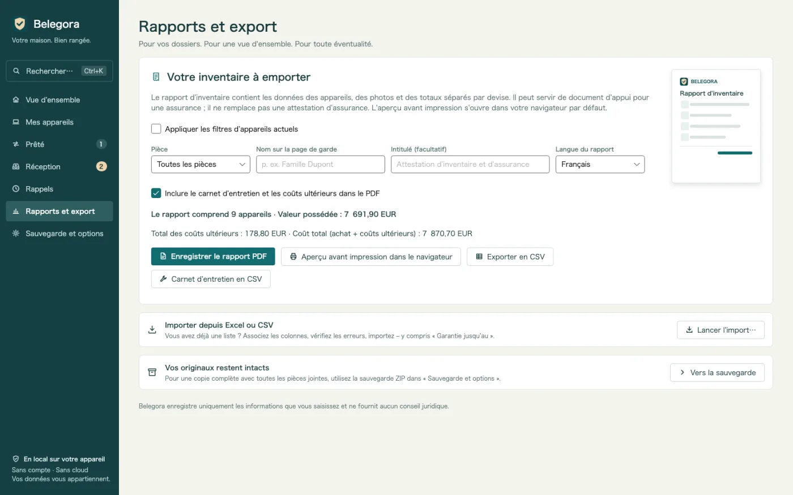
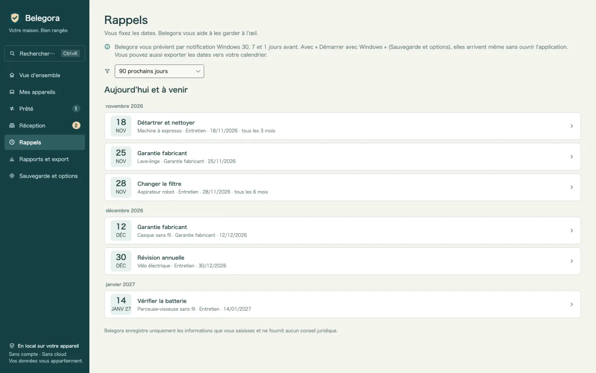

Rappels avant vos échéances
Garantie, retour, assurance, entretien : Belegora affiche une notification Windows autant de jours à l'avance que vous le souhaitez.
Archive de garanties et de tickets pour Windows
La batterie lâche après 20 mois ? Ticket, numéro de série et date de garantie en quelques secondes. Tickets envoyés du téléphone par QR code, rappels avant vos échéances, PDF pour l’assurance. Hors ligne, sans compte.

Belegora s'occupe des tâches pénibles : collecter les tickets, proposer les informations, vous prévenir avant les échéances.
Garantie, retour, assurance, entretien : Belegora affiche une notification Windows autant de jours à l'avance que vous le souhaitez.
Scannez le QR code, envoyez la photo depuis le navigateur. Le ticket arrive par votre Wi-Fi dans la boîte de réception. Sans câble, cloud ni application mobile.
Date d'achat, montant et vendeur sont proposés à partir du ticket. Vous vérifiez, enregistrez, et l'appareil est créé en un clic.
La liste des appareils montre d'un coup d'œil les garanties qui expirent bientôt, avec la colonne « Garantie jusqu'au ».
Retrouvez chaque appareil par nom, numéro de série, vendeur, étiquette, fichier ou emprunteur, et lancez des actions comme le PDF ou la sauvegarde – au clavier.
Plusieurs tickets à la suite : le ticket à gauche, le formulaire court avec suggestions à droite. Entrée enregistre, Ctrl+→ passe.
Notez réparations, entretiens, pièces de rechange et accessoires avec leur coût. Coûts ultérieurs et coût total par appareil, aussi dans le PDF et en CSV.
Qui a la perceuse ? Prêté à, depuis quand, retour prévu – avec rappel et historique. Et un aperçu une fois par semaine.
Après un dégât des eaux ou un cambriolage : rapport avec page de garde, liste par pièce, totaux, photos et justificatifs. Langue du rapport au choix.
Reprenez votre liste existante en associant les colonnes. Export en CSV, échéances en ICS pour tout calendrier.
Les sauvegardes, pièces jointes comprises, sont automatiques. La restauration montre un aperçu avant de rétablir.
Pas de cloud, pas de compte, pas de publicité, pas de pistage. Vos données restent sur votre PC.
Bon à savoir : Belegora enregistre vos informations et échéances et ne fournit pas de conseil juridique. Les notifications apparaissent lorsque Belegora est ouvert ; l’application peut démarrer avec Windows. La reconnaissance de texte utilise l’OCR de Windows et nécessite le module linguistique Windows correspondant.
Envoyez une photo depuis le téléphone par QR code, déposez un fichier dans le dossier de réception ou importez votre liste Excel.
Belegora propose date, montant et vendeur. Créez l'appareil, saisissez l'échéance et le délai de rappel.
Belegora vous prévient à temps. En cas de sinistre, le rapport d'assurance est prêt en quelques minutes.









14,99 €
achat unique, prix en Allemagne
Disponible dès maintenant sur le Microsoft Store. Les prix peuvent varier selon le pays.

Vous seul. Belegora n'envoie aucune donnée, ni à nous ni à des tiers ; pas de compte, pas de télémétrie. L'envoi depuis le téléphone ne fonctionne que dans votre réseau local.
Localement sur votre PC, dans le dossier de données de l'application (%LOCALAPPDATA%\MinhStudios\Belegora), avec les copies des pièces jointes et les sauvegardes automatiques.
Créez une sauvegarde dans Belegora (un ZIP avec toutes les données et pièces jointes), copiez-la sur le nouveau PC, installez Belegora et restaurez-la. L'aperçu montre ce qui sera repris.
Non. Belegora enregistre vos informations et échéances et ne fournit pas de conseil juridique. Votre droit se vérifie auprès du vendeur, du fabricant ou de l'assureur.
Les notifications apparaissent lorsque Belegora est ouvert ; l'application peut démarrer avec Windows. Vous pouvez aussi exporter les échéances en ICS vers votre calendrier.